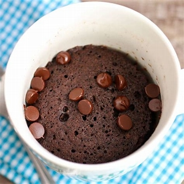
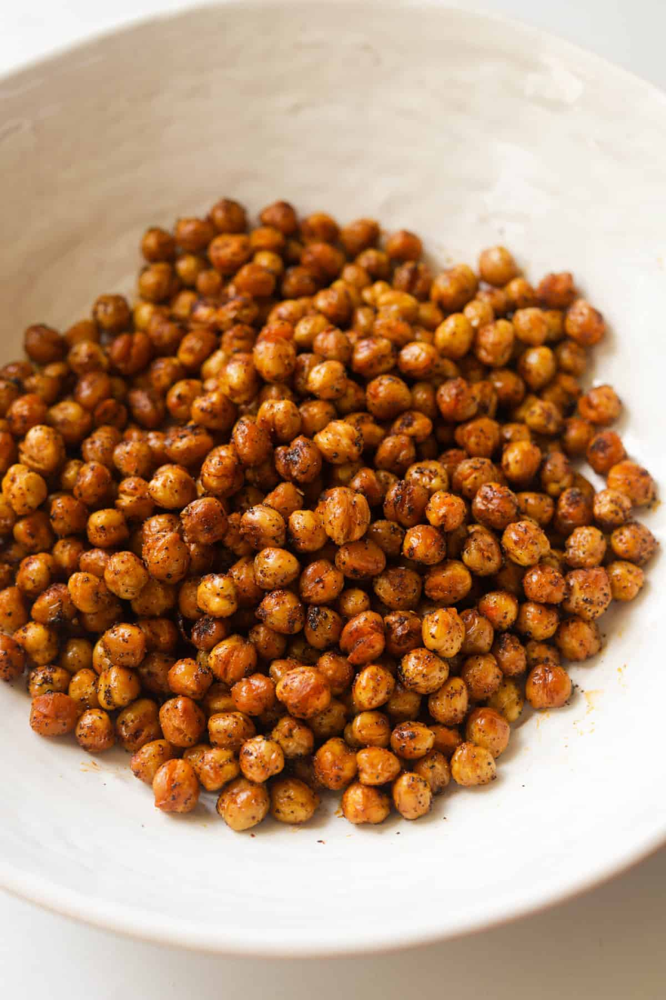
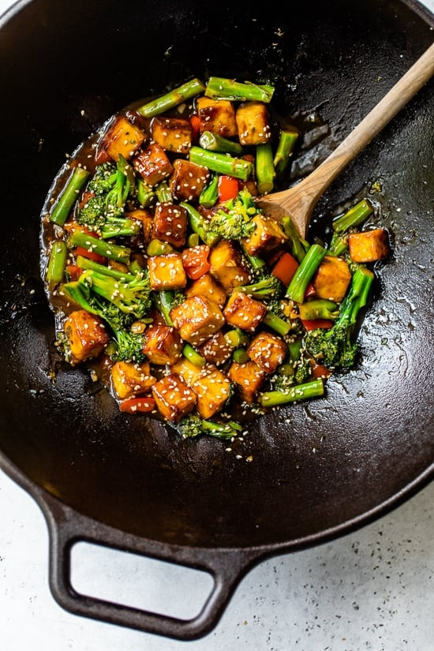

Garlic butter shrimp holds a special place in my heart because it was one of the first dishes I learned to cook as a college student. A bag of frozen shrimp was affordable on my limited budget, and I could use it to make several easy shrimp recipes. When I made this recipe, the intoxicating aroma of lemony, garlicky, buttery shrimp wafted down the halls, earning me a reputation as the “fancy” cook on my floor. The butter-garlic shrimp sauce is incredibly versatile, and tastes good on everything from noodles to vegetables. I’ve eaten these shrimp over rice, with pasta and on top of salads (like shrimp Caesar salad). They work as an appetizer for fancy dinner parties—especially if you leave the tails on for easy grabbing. I’m also not afraid to admit that I’ve eaten them straight out of the bowl (with a hunk of crusty bread to sop up every last bite of that flavored butter).
This chocolate mug cake is made in the microwave for a fudgy, chocolaty treat that is truly decadent. It's a great recipe for nights when I need a yummy dessert that's ready in less than 10 minutes! Add a few chocolate chips to make it extra rich and gooey.
Spicy roasted chickpeas are an excellent crispy, crunchy, salty snack.
This simple Tofu Veggie Stir Fry turned out so good! I love finding new ways to incorporate more tofu in my life, which is basically a blank sponge that soaks up anything you season it with. The stir fry sauce has just three ingredients: soy sauce, broth, and a little honey. Combine that with garlic and ginger, and you can’t go wrong! If you want more more tofu recipes try my Spicy Sriracha Tofu Rice Bowls and Kung Pao Tofu.
